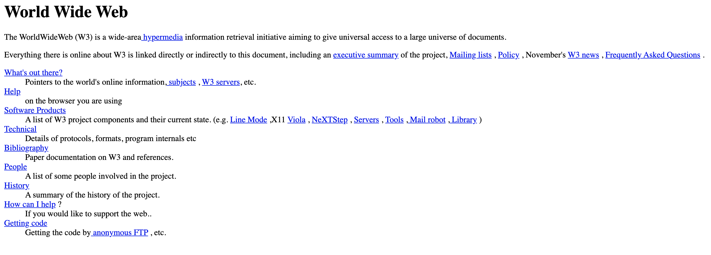
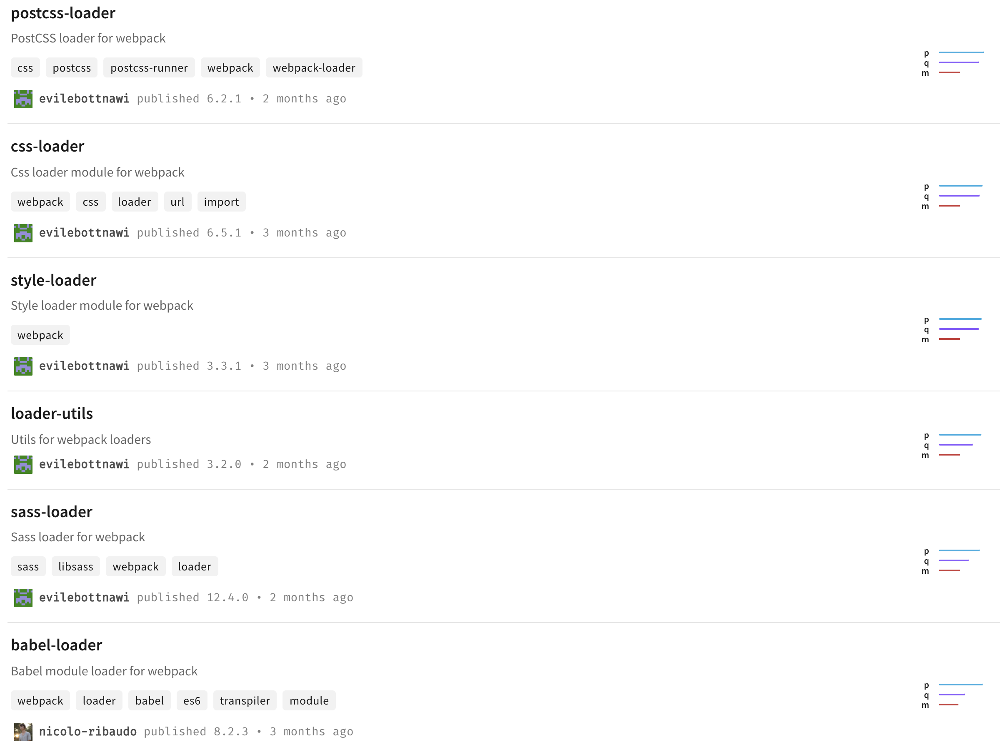

Bundlers
the invisible hero (& villain) of the JS world?
Examples
- Webpack
- Parcel
- ESBuild
- Rollup
1991
1995
JavaScript was designed in 10 days
Developed as an MVP
Today #1 most commonly used language
It had a few quirks
// function takes in an argument
function plusOne(x) { return x + 1; }
// JavaScript doesn't care
plusOne(); // undefined
// because this makes sense
[] == ![] // true
// it kinda makes sense... actually no
Number([]) // 0
In a browser
Translates to...
// script1.js
utils = { somethingUseful: function () { } };
helper1 = { something1: function () { return utils.somethingUseful(); } };
// script2.js
utils = { somethingElse: function () { } }; // oops, redefined
helper2 = { something2: function () { return utils.somethingElse(); };
IIFE
window.helper1 = (function (w) { return /* helper1 stuff */; })(window);
Node.js
var helper1 = require('helper1');
But browsers needed...
Callback hell...
http.get(arg1, function (err1, res1) {
http.get(arg2, function (err2, res2) {
http.get(arg3, function (err3, res3) {
db.read(arg4, function (err4, res4) {
// something useful
});
});
});
});
ECMAScript was born
const res1 = await http.get(arg1);
const res2 = await http.get(arg2);
const res3 = await http.get(arg3);
const res4 = await db.read(arg4);
So the community created...
Babel!
😀
const res1 = await http.get(arg1);
const res2 = await http.get(arg2);
const res3 = await http.get(arg3);
const res4 = await db.read(arg4);
Remember this problem?
// function takes in an argument
function plusOne(x) { return x + 1; }
// JavaScript doesn't care
plusOne(); // undefined
Typescript was born!
// function takes in a number
function plusOne(x: number) { return x + 1; }
// TypeScript cares
plusOne(); // COMPILE ERROR
What if?
import Image from 'assets/images.png';
import 'styles/assets.css';
What if?
import ImageAsReactComponent from 'assets/images.png';
import myCss from 'styles/assets.css';
But users needed...
function dieToss(){return Math.floor(6*Math.random())+1}function tossASix(){return new RSVP.Promise(function(a,b){var c=Math.floor(6*Math.random())+1;6===c?a(c):b(c)})}function logAndTossAgain(a){return console.log("Tossed a "+a+", need to try again."),tossASix()}function logSuccess(a){console.log("Yay, managed to toss a "+a+".")}function logFailure(a){console.log("Tossed a "+a+". Too bad, couldn't roll a six")}tossASix().then(null,logAndTossAgain).then(null,logAndTossAgain).then(logSuccess,logFailure);
So the community started building tools
Like...
We ended up with a whole bunch of tools
Babel/SWC let's us do:
export interface Props {
name: string;
}
export default function Component(props: Props) {
return Hello World;
}
Yarn and NPM gave us:
import React from 'react';
import classnames from 'classnames';
Webpack, ESBuild, Rollup let’s us:
import Icon from './assets/icon.svg';
import ImageSrc from './assets/image.jpg';
import myCss from './styles/my.css';
Released in 1996
A way to style web pages
Markup language
Simple example
div {
height: 10px;
color: grey;
}
In the browser
Which translates to...
/* styles/css1.css */
.container {
height: 10px;
background-color: red;
}
.special.container {
width: 50px;
}
/* styles/css2.css */
.container { /* conflict!!!! */
width: 100px;
background-color: blue;
}
Rules were messy...
.my-component {
height: 10px; /* from .container in styles/css1.css */
width: 50px; /* from .special.container in styles/css1.css */
background-color: blue; /* from .container in styles/css2.css */
}
BEM
.main-container__section--success {
background-color: green;
}
It was just a naming convention...
Not good enough!
🙁
var height = 10px; /* ERROR */
div {
height: height;
color: grey;
}
SASS!
$my-color: red;
.container {
color: $my-color;
& .card {
width: 50px;
}
}
LESS!
@my-color: red;
.container {
color: @my-color;
.card {
width: 50px;
}
}

Official CSS3 specification
:root {
--my-color: red;
}
.container {
color: var(--my-color);
& .card {
width: 50px;
}
}
Optimization?
/* not needed! waste of resources!! */
😀
// components/script1.js
import './components/styles1.css';
🙁
.main-container__section--success { /* ewww */
background-color: green;
}
From this...
/* styles1.css */
.section {
background-color: green;
}
/* styles2.css */
.section {
background-color: blue;
}
We get this!
.a72d6005 {
background-color: green;
}
/* yay, no conflicts! */
.ec5a88f0 {
background-color: blue;
}
Styled components were born!
const Button = styled.a`
display: inline-block;
border-radius: 3px;
padding: 0.5rem 0;
margin: 0.5rem 1rem;
width: 11rem;
background: transparent;
color: white;
border: 2px solid white;
`
Tailwind!
const Button = () => (
);
ECMAScript + CSS Modules + CSS3
import React from 'react';
import styles from './index.css';
export default () => Hello World;
TypeScript + BEM + SASS
// no need to import React
import './index.scss';
const Component: React.FC<{}> = () => Hello World;
export default Component;
ECMAScript + Styled components
import styled from 'styled-components';
const Div = styled.div`
/* my styles */
`; // no CSS imports, magic!
export default () => Hello World;
What else can we do?
What if we get rid of JavaScript?
CoffeeScript
{div} = React.DOM
# who needs parentheses anyway
export default div
className: 'p-4 inline bg-red'
Hello World
- Browser compatibility
- Minification
- Code isolation
- Lazy loading and tree-shaking
- Cache busting